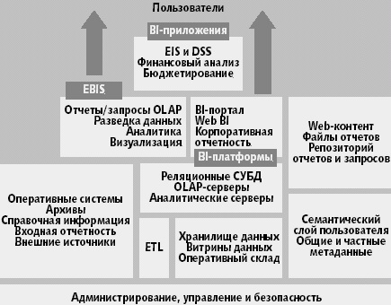

BI как методы, технологии, средства извлечения и представления знаний
Термин «business intelligence» существует сравнительно давно, хотя у нас он мало употребляется из-за отсутствия адекватного перевода и четкого понимания, что, впрочем, характерно и для Запада.
В русском языке слово «интеллект» однозначно понимается, как мыслительная способность человека. На первый взгляд неплохой перевод для термина Business intelligence предложен в «интеллектуальный анализ данных», но сразу возникает вопрос, а имеется ли «неинтеллектуальный анализ данных». Пути языка неисповедимы, поэтому будем использовать и оригинал на английском и кальку «бизнес-интеллект».
Различные определения
Впервые термин «business intelligence» был введен в обращение аналитиками Gartner в конце 1980-х годов, как «пользователецентрический процесс, который включает доступ и исследование информации, ее анализ, выработку интуиции и понимания, которые ведут к улучшенному и неформальному принятию решений». Позже в 1996 году появилось уточнение — «инструменты для анализа данных, построения отчетов и запросов могут помочь бизнес-пользователям преодолеть море данных для того, чтобы синтезировать из них значимую информацию, — сегодня эти инструменты в совокупности попадают в категорию, называемую бизнес-интеллект (Business Intelligence)».
BI как методы, технологии, средства извлечения и представления знаний
Согласно первоначальным определениям, BI — это процесс анализа информации, выработки интуиции и понимания для улучшенного и неформального принятия решений бизнес-пользователями, а также инструменты для извлечения из данных значимой для бизнеса информации. Надо отметить, что большинство определений трактуют «business intelligence» как процесс, технологии, методы и средства извлечения и представления знаний.
В статье Джонатана Ву «Business Intelligence: What is Business Intelligence?», говорится: «Business Intelligence является процессом сбора многоаспектной информации об исследуемом предмете. Разработаны программные приложения, которые обеспечивают пользователей возможностью проводить такой процесс для ответа на вопросы бизнеса и для выявления значимых тенденций или шаблонов в исследуемой информации».
А вот определение, предложенное The Data Warehousing Institute: «Business intelligence имеет отношение к процессу превращения данных в знания, а знаний в действия бизнеса для получения выгоды. Является деятельностью конечного пользователя, которую облегчают различные аналитические и групповые инструменты и приложения, а также инфраструктура хранилища данных».
Глоссарий избегает напрямую говорить о business intelligence, а ведет речь об инструментах бизнес-интеллекта (business intelligence tools), но в контексте данных, информации и знаний: «Инструменты business intelligence — программное обеспечение, которое позволяет бизнес-пользователям видеть и использовать большое количество сложных данных. Знания, основанные на данных, (data-based knowledge) получаются из данных с использованием инструментов business intelligence и процесса создания и ведения хранилища данных (data warehousing)».
BI как знания о бизнесе и для бизнеса
Другая часть определений рассматривает business intelligence не как процесс, а как результат процесса извлечения знаний — как сами знания о бизнесе для принятия решений.
Следующее определение взято из глоссария к материалу «Impossible Data Warehouse Situations: Solutions from the Experts»: «Business Intelligence (BI) обычно описывает результат углубленного анализа детальных данных бизнеса, включает технологии баз данных и приложений, а также практику анализа. Иногда используется как синоним «поддержки принятия решений», хотя Business Intelligence понятие технически более широкое».
Итак, бизнес-интеллект (business intelligence) в широком смысле слова определяет:
информационные технологии (методы и средства) сбора данных, консолидации информации и обеспечения доступа бизнес-пользователей к знаниям;
знания о бизнесе, добытые в результате углубленного анализа детальных данных и консолидированной информации.
Место и характерные особенности Business intelligence
В основе технологии BI лежит организация доступа конечных пользователей и анализ структурированных количественных по своей природе данных и информации о бизнесе. BI порождает итерационный процесс бизнес-пользователя, включающий доступ к данным и их анализ, и тем самым проявление интуиции, формирование заключений, нахождение взаимосвязей, чтобы эффективно изменять предприятие в положительную сторону. BI имеет широкий спектр пользователей на предприятии, включая руководителей и аналитиков.
Business intelligence и Knowledge Management
Некоторые склонны весьма широко трактовать BI, включая в это понятие и технологию управления знаниями Knowledge Management (КМ), которая, однако больше связана с анализом неструктурированной или слабоструктурированной информации (например, HTML), которая не является предметом анализа BI-инструментов. KM обеспечивает категоризацию, разведку и семантическую обработку текстов, расширенный поиск информации и др. Технология BI имеет отношение к анализу фактографической структурированной (базы данных, плоские файлы и другие ODBC или OLE DB-источники данных) и квазиструктурированной информации (например, XML). Плотные стыки и пересечения возможны при подготовке справочной информации для анализа с помощью разведки (text mining) и очистки текста, а также при расширении поиска информации на аналитические БД. Корпорации IBM и Microsoft реализуют стратегии интеграции программных средств бизнес-интеллекта и инструментов управления знаниями, ставя своей целью создание нового поколения ПО, которое будет обрабатывать как структурированные, так и неструктурированные данные .
BI, EIS, DSS, электронный бизнес и коммерция
За последние 10 лет менялись названия и содержание информационно-аналитических систем от информационных систем руководителя (executive information systems, EIS) до систем поддержки принятия решений (decision support systems , DSS) и сейчас до систем бизнес-интеллекта .
Во времена больших ЭВМ и миникомпьютеров, когда у большинства пользователей не было прямого доступа к компьютерам, организации зависели от своих подразделений ИТ, которые обеспечивали их стандартными и параметрическими отчетами. Но чтобы получить отчеты, отличные от стандартных, пользователям нужно было заказывать их разработку и ждать в течение нескольких дней или недель.
Приложения EIS были настроены на нужды руководителей и менеджеров и давали возможность получать основную агрегированную информацию о состоянии их бизнеса в виде таблиц или диаграмм. Обычно они включали регламентные запросы с набором параметров. Такие пакеты обычно разрабатывались силами своих подразделений ИТ. Для получения дополнительной информации и проведения дальнейшего анализа применялись другие приложения или создавались по заказу запросы или отчеты на SQL.
Приложения DSS первого поколения были пакетами прикладных программ с динамической генерацией SQL-скриптов по типу запрашиваемой пользователем информации. Они позволяли аналитикам получать информацию из реляционных БД, не требуя знания SQL. В отличие от EIS приложения DSS могут отвечать на широкий спектр вопросов бизнеса, имеют несколько вариантов представления отчетов и определенные возможности форматирования. Однако гибкость таких пакетов все же была ограничена из-за ориентации на конкретный набор задач.
С приходом ПК и локальных сетей следующее поколение приложений DSS строится уже на основе BI и позволяет пользователю-непрограммисту легко и оперативно извлекать информацию из различных источников, формировать собственные настраиваемые отчеты или графические представления, проводить многомерный анализ данных. Развитие систем бизнес-интеллекта прошло путь от «толстых» клиентов до Web-приложений, в которых пользователь ведет исследование с помощью браузера и может работать удаленно. Можно также создавать сценарии «что если» и коллективно просматривать и обновлять информацию.
Хотя пользователи корпоративной BI-информации традиционно находятся внутри предприятия, с распространением Web для электронного бизнеса, B2B, CRM и SCM BI-пользователи могут быть и внешними по отношению к предприятию , а в B2C, C2B и на торговых площадках пользователями BI являются пользователи Internet.
BI и хранилища данных
Концепция, методы и средства хранилища данных (Data warehousing) определяют подходы и обеспечивают интеграцию, очистку, ретроспективное хранение информации, предназначенной для анализа , отвечают на вопрос «Как подготовить информацию для анализа?». Технология бизнес-интеллекта определяет методы и средства доступа и оперативного анализа информации в терминах предметной области. BI-средства не обязательно должны работать в инфраструктуре хранилища данных, но в этом случае проблема очистки и согласования данных возлагается на них, причем осуществлять эти операции придется на лету или же предварительно, но для обособленного информационного ресурса. Кроме того, есть эффект влияния на производительность и надежность оперативной системы обработки транзакций. Вот почему хорошей корпоративной практикой является выделение транзакционной и аналитической составляющих и применение для второй различных решений по хранилищу данных. Основные стыки идут не только на уровне информации, но и на уровне метаданных. В случае хранилища данных можно обеспечить централизованное управление метаданными.
Следует отметить, что часто термином «хранилище данных» обозначают систему поддержки принятия решений DSS или информационно-аналитическую систему, основанные на технологиях хранилища данных и бизнес-интеллекта .
Архитектура business intelligence
Корпоративная BI-архитектура должна быть разработана после того, как определены BI-потребности пользователей, но до выбора BI-инструментов. Архитектура Business Intelligence определяет компоненты доставки BI-информации и компоненты BI-технологии (рис.1). После определения профилей использования BI-информации, может быть спроектирована архитектура доставки информации, основанная на этих профилях и на требуемом типе внедрения. Это может быть любая смесь настольных клиентов с сетевым подключением, настольных клиентов и сервера, тонких клиентов на основе Web и других мобильных вычислительных устройств. Архитектура доставки информации определит пользовательские интерфейсы, которые часто являются порталами с возможностью персонализации.
,
Рис.1. Архитектура Business intelligence
Архитектура BI-технологии определяет инфраструктуру и компоненты, необходимые для поддержки внедрения, эксплуатации и администрирования BI-инструментов и приложений, а также связи этих компонентов. Прочная архитектура BI-технологии будет состоять из двух важных слоев: инфраструктуры и прикладных сервисов (или функциональности). Инфраструктурный слой включает информационные ресурсы, администрирование и сети. На этом слое данные собираются, интегрируются и становятся доступными. Хранилище данных является одним из возможных компонентов инфраструктурного слоя. Для использования BI в оперативных системах может потребоваться оперативный склад данных (operational data store, ODS), возможно связанный с корпоративными структурами workflow. Прикладные сервисы включают все BI-сервисы, такие как механизмы запросов, анализа, генерации отчетов и визуализации, а также средства безопасности и метаданные.
Среда хранения и доступ к BI-информации
Помимо традиционных решений по хранилищам данных Oracle9i и MS SQL Server2000, растет число применений хранилищ ERP, например, SAP BW для R/3, или PeopleSoft Enterprise Warehouse с BI-приложениями Enterprise Performance Management. Однако в обоих случаях функциональность привязана к конкретным системам ERP, а следовательно ограничена. Быстро растет применение ROLAP для хранения BI-информации, из-за удобства реляционных СУБД для приложений с очень большими базами детальных данных и благодаря включению возможностей OLAP в СУБД. Использование МБД и OLAP остается неизменным и наиболее преобладающим, т.к. они обеспечивают лучшую производительность и функциональность там, где важны агрегированные данные и сложные аналитические расчеты.
Неудивительно, что при дороговизне двухзвенных клиент-серверных структур доступ к BI все чаще происходит через Web. Центр тяжести перемещается на сервер, отражая тот факт, что важным элементом является доступ к корпоративной BI-информации, автономные же ПК явно недостаточно функциональны. Популярна и растет доставка BI-отчетов по электронной почте, а мобильные и беспроводные способы доставки пока распространяются медленно.
Метаданные
Большинство BI-инструментов, представленных на рынке, используют слой метаданных или репозиторий. Бизнес-метаданные включают определения данных, которые хранятся в источниках данных, в терминах предметной области. Они также могут содержать правила и вычисления, которые должны быть определены для этого бизнеса. Кроме того, существуют технические метаданные для доступа к физическим данным. CASE-средства, реляционные СУБД, средства извлечения, преобразования и загрузки данных используют метаданные. При создании хранилища и витрин данных часто можно автоматически извлечь метаданные из источников данных, но иногда пользователям самим приходится доставать метаданные. Так, возможна сложная ситуация с несколькими репозиториями, существующими в одной организации. Отсутствие общих метаданных для инструментов — из-за отсутствия стандартов для метаданных — серьезная проблема для подразделений ИТ.
Плюсы и минусы технологии
Возможности пользователя по ведению многоаспектного оперативного анализа информации в терминах предметной области для поддержки принятия бизнес решений быстро расширяются. Параллельное движение от информационной анархии или диктатуры к информационной демократии [9] расширяет контингент пользователей business intelligence. На первое место выходит потребность гибкого доступа к корпоративным данным, а не просто потребность решить конкретную функциональную задачу. Снижается прямая зависимость от подразделений ИТ, изготавливающих по заказу отчеты или запросы. Возможен переход от статических регламентных отчетов к «живому отчету», а наиболее продвинутые аналитики получают возможность проводить кросс-тематический анализ и построение сводных отчетов с нуля, имея семантических слой, описывающий все показатели и разрезы корпоративной информации. Эти же средства могут использовать программисты для быстрого создания регламентных, параметрических отчетов. Web-доступ к BI (как к статическому, так и к динамическому контенту) позволит обеспечить реальное корпоративное информационное пространство и коллективную работу сотрудников.
Основным риском является слишком быстрые изменения в технологии BI, использование непроверенных решений и средств. Нужно отслеживать поставщиков, оценивать их устойчивость, направления развития, регулярно пробовать новые средства, проводить типизацию и унификацию BI. Другой риск связан с качеством данных — если они должным образом не преобразованы, не очищены и не консолидированы, то никакие «навороченные» возможности BI-инструментов или приложений не смогут увеличить достоверность данных. Ряд проблем могут возникнуть из-за не согласованности метаданных. В рамках большой корпорации эти вопросы решаются на инфраструктурном уровне путем создания корпоративного хранилища данных и централизованного управления метаданными. Создание хранилища поможет навести порядок в номенклатуре собираемых показателей, сборе данных, их распространении и санкционировании доступа. Сама BI-технология не в состоянии решить комплексно эти проблемы, а пренебрежение ими возвращает к информационной анархии и «силосным ямам данных».
Видео материалы